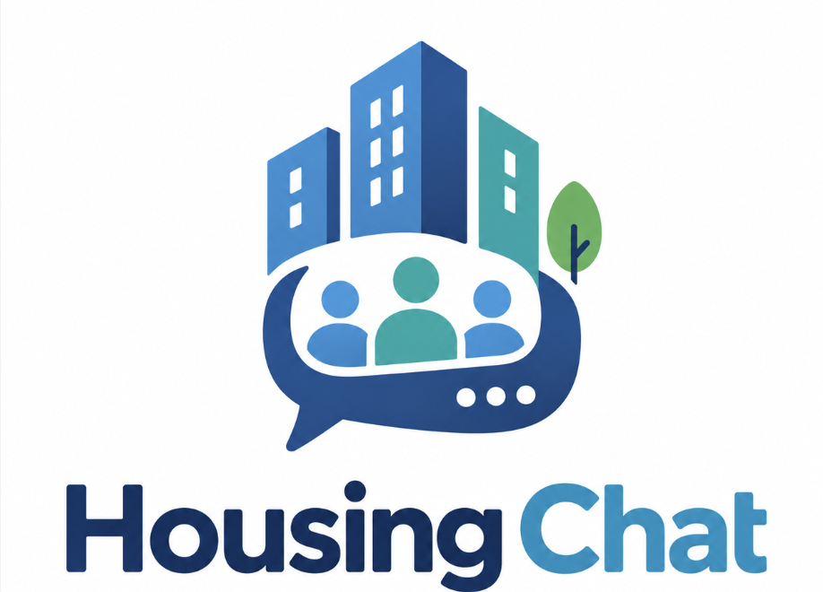
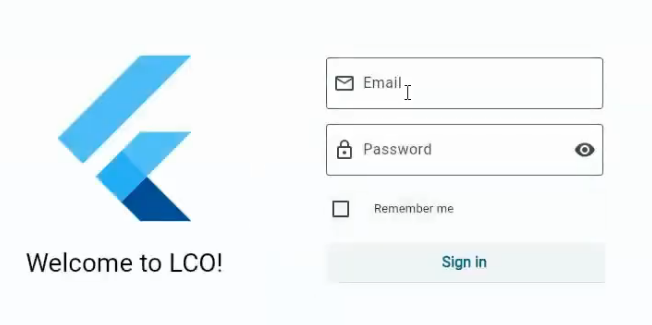
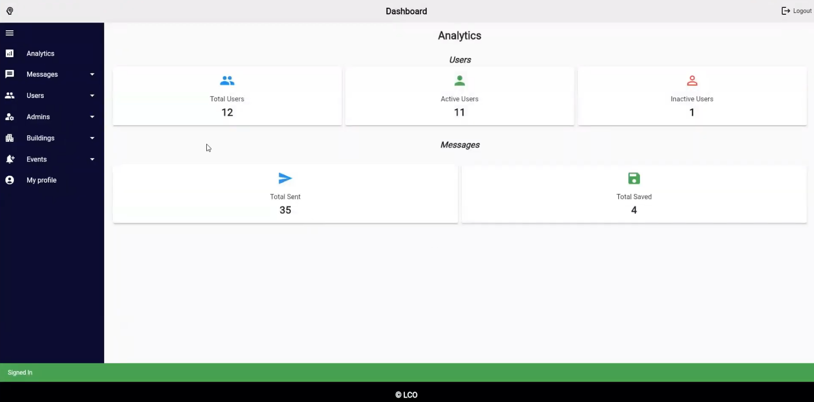

Project Detail
Ottawa Community Housing Communication Platform
A targeted digital communication system designed to help landlords reach tenants in smart residential buildings.
Project Description
Ottawa Community Housing (OCH)/ Logement Communautaire Ottawa (LCO) needed a more efficient way to communicate important information to tenants. Previously, landlords had to print thousands of paper notices and distribute them throughout the buildings.
Our solution was a communication application called Housing Chat with separate landlord and tenant experiences. Landlords could write a message, assign a priority level, and target a specific building, floor, or room. Tenants could then view relevant notices digitally instead of relying on paper distribution.

Smart-building integration
Because the buildings included electronic tablets at their entrances, the application could be downloaded directly onto those devices so residents would see updates during their daily routine. Tenants could also download the application for free on an iPhone and receive the same targeted information.

Technology and platform compatibility
We coded the application using Flutter and the Dart programming language. This technology choice allowed us to build a cross-platform application that could be deployed to Apple iOS devices and Samsung devices through the relevant app stores while maintaining one shared codebase.
Security, confidentiality and authentification
Protecting tenant information was an important requirement of the project. The application needed to keep user data confidential and ensure that only authorized tenants could access the communication platform.
During sign-up, SendGrid was used to verify the user's email address. After the email was verified, the user also had to enter a sign-in code provided by the administrator or landlord. This additional step helped confirm that the account belonged to an authorized tenant.
Google Firebase was used as the backend database and authentication platform. It allowed user profiles, names, credentials, and other application data to be managed securely and updated in real time across the landlord and tenant sides of the application.